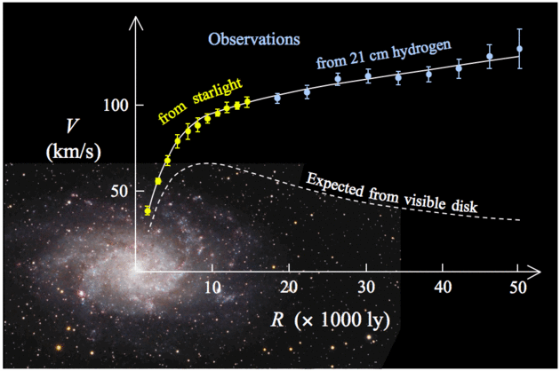
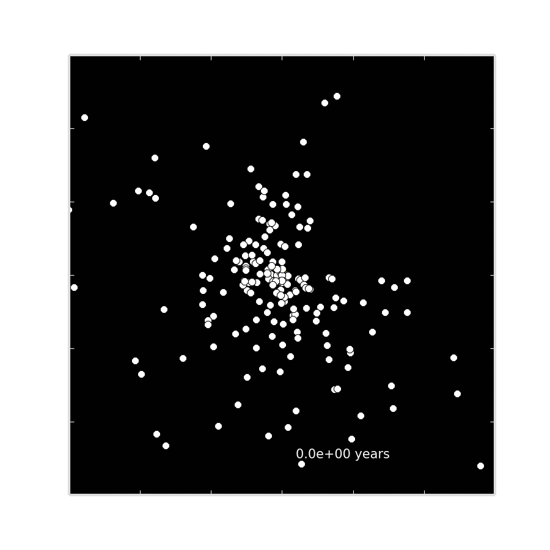

How do you visualize something that can't be seen? The same way you discover it! By visualizing the effect that it has on the stuff that can be seen. There is 5 tims more DARK MATTER in the univers than regular matter, the kind that makes us, and the stars. The three animations below show the motion of stars in a galaxy under three different scenarios: (1) With no dark matter, (2) ISO, an isothermal density model for dark matter halos, and (3) the NFW density model.


No Dark Matter

Dark Matter with NFW motion model

Dark Matter with ISO motion model